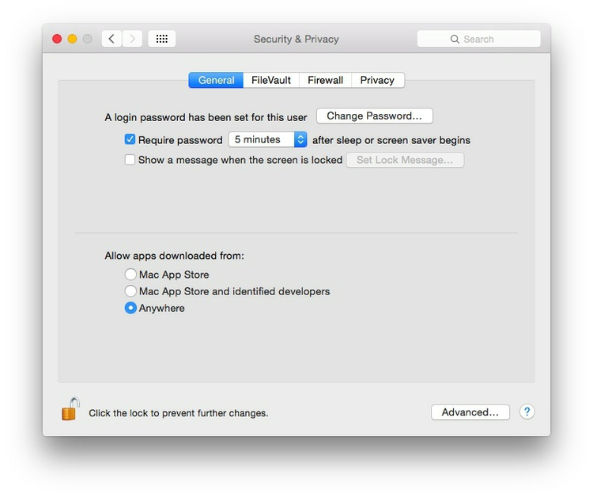

To install some of the software below, you will need to alter your Mac security preferences to allow apps authored by developers that are not part of Apple’s ecosystem. Open System Preferences>Security & Privacy, select the General tab and click the lock icon at bottom left to make changes, then allow apps downloaded from Anywhere:

Some of the tools we will use are Firefox add-ons. Ensure that you have the latest version of this popular web browser. Download Firefox, or if already installed, if necessary update to the latest version following these instructions.
For some exercises, you will need a text editor optimized for authoring web pages. These are both good options.
Allows you to create charts through a point-and-click interface, unlocking the basic functionality of ggplot2, a visualization package for R (see below). Web app: no installation required.
Your go-to resource for color schemes to encode data. Web app: no installation required.
Allows you to simulate the effects of three forms of colorblindness on your screen, to check that your charts and maps do not exclude the color-impaired. Download and move to your Applications folder. When launched, program icon will appear to the right of your menu bar. You can set to start at login under Preferences.
Visualization software designed for exploratory graphic analysis, which also allows you to create interactive online graphics without JavaScript coding. Download here. You will also need to sign up for a free Tableau Public account.
The Public version of the software requires you to save your visualizations to the open web. However, members of Investigative Reporters and Editors can obtain a license for the Professional version, which allows you to save workbooks on your machine. In any case, I strongly recommend that J-School students join IRE as a student member: it is a leader for training in data journalism.
Point-and-click GUI for version control of your projects, and synching with remote hosting at GitHub. Download from here. You will also need to sign up here for a free GitHub account.
Markdown editor, which will make authoring webpages much easier. Download from here. (If you are already using Markdown, feel free to keep using the editor of your choice.)
Two handy Firefox add-ons, which will help you extract data from the web. Install them in Firefox here and here.
A tool for scraping data from the web, without the need to write code. You will need to sign up for an account at the Sign up link on the home page, and download the app from here. (Import.io is still in the progress of migrating from a Desktop app to a web-only application.)
A powerful tool for data cleaning, once owned by Google, now open source. Download the latest stable version from here. When launched, Open Refine will work in your default web browser; note that your data remains on your computer, and is not uploaded to the web.
Allows you to convert tabular (spreadsheet/CSV) data to web-friendly formats including JSON. Web app: no installation required.
Allows you to convert addresses to latitude and longitude coordinates. Web app: no installation required; however, you will need to sign up for API keys for the geocoding services it uses.
A sophisticated cloud-based mapping application that also functions as a geospatial database, allowing you to analyze and process geodata. Sign up here for a free account.
A JavaScript code library for making interactive online maps. Download the latest stable version from here and unzip, or place the code for the hosted version of this release between the <head></head> tags of your HTML code.
The leading open source Geographic Information System, which we will use to make maps and process geodata. Download the latest standard version of QGIS and its requirements from here. Install GDAL and the Matplotlib Python module before installing QGIS itself.
R is a software environment and programming language for statistical computing and graphics. Download the latest package for OSX. R Studio provides a user interface that makes it much easier to use. Download the latest free version of RStudio Desktop from here.
A JavaScript code library for manipulating documents based on data, which has emerged in recent years as a powerful and flexible tool for interactive data visualization. Download the latest version from here and unzip, or include the following code snippet in your HTML:
<script src="https://d3js.org/d3.v4.min.js"></script>